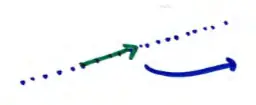
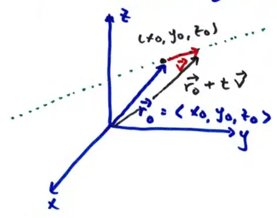

13.5 Lines and Planes
line: collection of points that lie along a certain direction

the direction vector (like slope in \(\mathbb{R}^2\))
to find the direction vector, find the position vector of one point from any other
if we know one point on the line: \((x_0, y_0, z_0)\)

how to write the equation of this line \(\rightarrow\) finding the position vector of any point on this line
- \(\vec{r}_0\) : vector from origin to \((x_0, y_0, z_0)\)
- \(\vec{v}\) : direction vector
any other point is reached by
\[\vec{r}(t) = \vec{r}_0 + t \vec{v}\]
\(-\infty < t < \infty\)